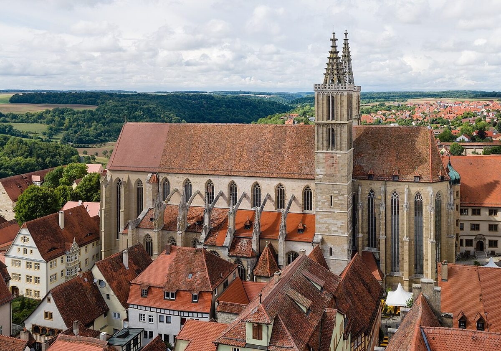

Rothenburg ob der Tauber: Un Joyau Médiéval en Allemagne

Dirigée par ses remparts médiévaux, ses ruelles pavées et ses maisons à colombages colorées, Rothenburg ob der Tauber est une ville qui semble tout droit sortie d'un conte de fées. Située en Bavière, en Allemagne, cette petite cité attire des visiteurs du monde entier grâce à son authenticité et à son atmosphère unique. Que vous soyez passionné d'histoire, amateur de photographie ou simplement en quête d'une escapade pittoresque, Rothenburg ob der Tauber saura vous séduire.
Comment s'y rendre ?
Rothenburg ob der Tauber est facilement accessible en train, en voiture ou en bus. Si vous voyagez depuis une grande ville allemande comme Munich ou Francfort, le train est une option pratique et confortable. La gare de Rothenburg est située à quelques minutes à pied du centre historique. Pour ceux qui préfèrent conduire, la ville est bien desservie par les autoroutes allemandes, et des parkings sont disponibles à proximité des remparts. Pensez à vérifier les tarifs de stationnement à l'avance.
Quand visiter Rothenburg ob der Tauber ?
Rothenburg ob der Tauber est magnifique toute l'année, mais elle prend une ambiance particulière pendant certaines périodes. Le printemps et l'été offrent un temps agréable pour explorer les rues et les jardins, tandis que l'automne colore la ville de teintes chaleureuses. Cependant, c'est pendant la période de Noël que Rothenburg devient vraiment magique. Le marché de Noël, l'un des plus célèbres d'Allemagne, transforme la ville en un véritable village de conte. Si vous préférez éviter la foule, évitez les mois de juillet et août, ainsi que les semaines précédant Noël.
Les incontournables de Rothenburg ob der Tauber
1. La Place du Marché (Marktplatz)
Au cœur de la ville, la Marktplatz est le centre névralgique de Rothenburg ob der Tauber. Entourée de bâtiments historiques, cette place est un excellent point de départ pour explorer la ville. Admirez l'Hôtel de Ville (Rathaus) avec sa tour imposante, et ne manquez pas l'horloge animée qui raconte une légende locale.
2. Les Remparts de la Ville
Les remparts médiévaux de Rothenburg sont l'une des caractéristiques les plus emblématiques de la ville. Vous pouvez marcher le long d'une grande partie de ces murs bien préservés, qui offrent des vues spectaculaires sur la ville et les alentours. Une promenade sur les remparts est une expérience incontournable pour comprendre l'histoire de Rothenburg.
3. Le Musée du Crime Médiéval
Pour une plongée fascinante dans l'histoire de la justice au Moyen Âge, visitez le Musée du Crime Médiéval. Ce musée abrite une collection impressionnante d'objets liés au droit pénal médiéval, y compris des instruments de torture, des documents historiques et des reconstitutions.
4. La Maison des Métiers (Käthe Wohlfahrt)
Si vous êtes amateur de décorations de Noël, ne manquez pas la Maison des Métiers Käthe Wohlfahrt. Ce magasin et musée enchanteur est rempli d'ornements de Noël toute l'année. Vous y trouverez également des souvenirs uniques et des objets artisanaux.
5. Le Château de Tauber et ses Vignobles
Un peu à l'extérieur de la ville, le Château de Tauber offre une vue imprenable sur la vallée de la Tauber et ses vignobles. Une promenade dans les environs vous permettra de découvrir les paysages pittoresques de la région.
Les spécialités culinaires
Rothenburg ob der Tauber est également un paradis pour les gourmands. Ne manquez pas de goûter à la spécialité locale, le Schneeball, une pâtisserie en forme de boule composée de pâte frite et souvent recouverte de sucre ou de chocolat. Pour un repas savoureux, essayez les plats traditionnels allemands comme le Schweinshaxe (jarret de porc) ou la Bratwurst servie avec de la choucroute. Les restaurants locaux proposent également une sélection de vins régionaux, parfaits pour accompagner votre repas.
Conseils supplémentaires
Profitez au maximum de votre visite en prenant le temps de vous perdre dans les ruelles de la vieille ville. Chaque coin de rue révèle une nouvelle surprise, qu'il s'agisse d'une boutique artisanale, d'une petite chapelle ou d'un jardin caché. Et n'oubliez pas votre appareil photo : Rothenburg ob der Tauber est un véritable rêve pour les photographes.
Que vous veniez pour une journée ou pour un séjour plus long, Rothenburg ob der Tauber vous laissera des souvenirs inoubliables. Cette ville médiévale incarne à merveille le charme et l'histoire de l'Allemagne.
Haiktec
- Découvrez le Saarland et la Moselle en 7 étapes : Guide pratique pour voyageurs autonomes
- Planificateur d'Entraînement & Suivi des Progrès pour Coachs Sportifs
- Organisation Simplifiée pour Petits Propriétaires: 7 Étapes pour Gérer 1 à 5 Logements sans Stress
Text mit KI erstellt und automatisch geprueft.